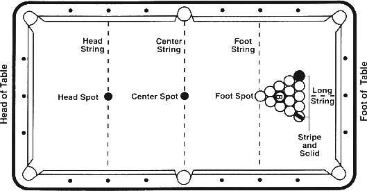

[Standardized World Rules 1997]
Except when clearly contradicted by these additional rules, the General Rules of Pocket Billiards apply.
1. OBJECT OF THE GAME. Eight Ball is a call shot game played with a cue ball and fifteen object balls, numbered 1 through 15. One player must pocket balls of the group numbered 1 through 7 (solid colors), while the other player has 9 through 15 (stripes). THE PLAYER POCKETING HIS GROUP FIRST AND THEN LEGALLY POCKETING THE 8-BALL WINS THE GAME.

2. CALL SHOT. In Call Shot, obvious balls and pockets do not have to be indicated. It is the opponent's right to ask which ball and pocket if he is unsure of the shot. Bank shots and combination shots are not considered obvious, and care should be taken in calling both the object ball and the intended pocket. When calling the shot, it is NEVER necessary to indicate details such as the number of cushions, banks, kisses, caroms, etc. Any balls pocketed on a foul remain pocketed, regardless of whether they belong to the shooter or the opponent.
The opening break is not a "called shot." Any player performing a break shot in 8-Ball may continue to shoot his next shot so long as he has legally pocketed any object ball on the break.
3. RACKING THE BALLS. The balls are racked in a triangle at the foot of the table with the 8-ball in the center of the triangle, the first ball of the rack on the footspot, a stripe ball in one corner of the rack and a solid ball in the other corner.
4. ALTERNATING BREAK. Winner of the lag has the option to break. During individual competition, players will alternate breaking on each subsequent game.
5. JUMP AND MASSE SHOT FOUL. While "cue ball fouls only" is the rule of play when a match is not presided over by a referee, a player should be aware that it will be considered a cue ball foul if during an attempt to jump, curve or masse the cue ball over or around an impeding numbered ball that is not a legal object ball, the impeding ball moves (regardless of whether it was moved by a hand, cue stick follow-through or bridge).
6. LEGAL BREAK SHOT. (Defined) To execute a legal break, the breaker (with the cue ball behind the headstring) must either (1) pocket a ball, or (2) drive at least four numbered balls to the rail. If he fails to make a legal break, it is a foul, and the incoming player has the option of (1) accepting the table in position and shooting, or (2) having the balls reracked and having the option of shooting the opening break himself or allowing the offending player to rebreak.
7. SCRATCH ON A LEGAL BREAK. If a player scratches on a legal break shot, (1) all balls pocketed remain pocketed (exception, the 8-ball: see rule 9), (2) it is a foul, (3) the table is open. PLEASE NOTE: Incoming player has cue ball in hand behind the head string and may not shoot an object ball that is behind the head string, unless he first shoots the cue ball past the headstring and causes the cue ball to come back behind the headstring and hit the object ball.
8. OBJECT BALLS JUMPED OFF THE TABLE ON THE BREAK. If a player jumps an object ball off the table on the break shot, it is a foul and the incoming player has the option of (1) accepting the table in position and shooting, or (2) taking cue ball in hand behind the head string and shooting.
9. 8-BALL POCKETED ON THE BREAK. If the 8-ball is pocketed on the break, the breaker may ask for a re-rack or have the 8-ball spotted and continue shooting. If the breaker scratches while pocketing the 8-ball on the break, the incoming player has the option of a re-rack or having the 8-ball spotted and begin shooting with ball in hand behind the headstring.
10. OPEN TABLE. (Defined) The table is "open" when the choice of groups (stripes or solids) has not yet been determined. When the table is open, it is legal to hit a solid first to make a stripe or vice-versa. Note: The table is always open immediately after the break shot. When the table is open it is legal to hit any solid or stripe or the 8-ball first in the process of pocketing the called stripe or solid. However, when the table is open and the 8-ball is the first ball contacted, no stripe or solid may be scored in favor of the shooter. The shooter loses his turn; any balls pocketed remain pocketed; and the incoming player addresses the balls with the table still open. On an open table, all illegally pocketed balls remain pocketed.
11. CHOICE OF GROUP. The choice of stripes or solids is not determined on the break even if balls are made from only one or both groups. THE TABLE IS ALWAYS OPEN IMMEDIATELY AFTER THE BREAK SHOT. The choice of group is determined only when a player legally pockets a called object ball after the break shot.
12. LEGAL SHOT. (Defined) On all shots (except on the break and when the table is open), the shooter must hit one of his group of balls first and (1) pocket a numbered ball, or (2) cause the cue ball or any numbered ball to contact a rail.
PLEASE NOTE: It is permissible for the shooter to bank the cue ball off a rail before contacting his object ball; however, after contact with his object ball, an object ball must be pocketed, OR the cue ball or any numbered ball must contact a rail. Failure to meet these requirements is a foul.
13. "SAFETY" SHOT. For tactical reasons a player may choose to pocket an obvious object ball and also discontinue his turn at the table by declaring "safety" in advance. A safety shot is defined as a legal shot. If the shooting player intends to play safe by pocketing an obvious object ball, then prior to the shot, he must declare a "safety" to his opponent. If this is NOT done, and one of the shooter's object balls is pocketed, the shooter will be required to shoot again. Any ball pocketed on a safety shot remains pocketed.
14. SCORING. A player is entitled to continue shooting until he fails to legally pocket a ball of his group. After a player has legally pocketed all of his group of balls, he shoots to pocket the 8-ball.
15. FOUL PENALTY. Opposing player gets cue ball in hand. This means that the player can place the cue ball anywhere on the table (does not have to be behind the headstring except on opening break). This rule prevents a player from making intentional fouls which would put his opponent at a disadvantage. With "cue ball in hand," the player may use his hand or any part of his cue (including the tip) to position the cue ball. When placing the cue ball in position, any forward stroke motion contacting the cue ball will be a foul, if not a legal shot. (Also see Rule 39 in the General Rules of Pocket Billiards)
16. COMBINATION SHOTS. combination shots are allowed; however, the 8-ball cannot be used as a first ball in the combination except when the table is open.
17. ILLEGALLY POCKETED BALLS. An object ball is considered to be illegally pocketed when (1) that object ball is pocketed on the same shot a foul is committed, or (2) the called ball did not go in the designated pocket, or (3) a safety is called prior to the shot. Illegally pocketed balls remain pocketed.
18. OBJECT BALLS JUMPED OFF THE TABLE. If any object ball is jumped off the table, it is a foul and loss of turn, unless it is the 8-ball, which is a loss of game. Any jumped object balls are spotted in numerical order according to General Rules for spotting balls.
19. PLAYING THE 8-BALL. When shooting at the 8-ball, a scratch or foul is not loss of game if the 8-ball is not pocketed or jumped from the table. Incoming player has cue ball in hand. Note: A combination shot can never be used to legally pocket the 8-ball.
20. LOSS OF GAME. A player loses the game if he commits any of the following infractions:
a. Fouls when pocketing the 8-ball (exception: see 8-Ball Pocketed On The Break).
b. Pockets the 8-ball on the same stroke as the last of his group of balls.
c. Jumps the 8-ball off the table at any time.
d. Pockets the 8-ball in a pocket other than the one designated.
e. Pockets the 8-ball when it is not the legal object ball.
Note: All infractions must be called before another shot is taken, or else it will be deemed that no infraction occurred.
21. STALEMATED GAME. If, after 3 consecutive turns at the table by each player (6 turns total), the referee judges (or if no referee, both players agree) that attempting to pocket or move an object ball will result in loss of game, the balls will be reracked with the original breaker of the stalemated game breaking again. The stalemate rule may only be used when there are only two object balls and the 8-ball remaining on the table. PLEASE NOTE: Three consecutive fouls by one player is not a loss of game.